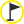
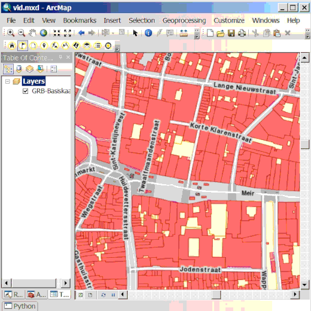

 Met deze tool kan u op een locatie in Vlaanderen op de kaart klikken om het correcte adres in CRAB te weten te komen. Het gevonden adres en de afstand tot het geklikt adres worden weergegeven in de dialoog, op de kaart zie en blauw icoon op de geklikte coördinaat en een gele op die van het gevonden adres. De knop Markeer locatie laat toe het gevonden adres toe te voegen als een graphic en text-annotation aan de kaart. Met de knop Opslaan kan je het adres opslaan als Shapefile of in een File Geodatabase als een kaartlaag toevoegen. Deze laag kan je gebruiken in analyses of voor cartografie.
Als je meerdere adressen toevoegt komen die in dezelfde laag terecht. De laag bevat een attribuut 'type' dat aangeeft hoe de locatie in crab bepaald werd en geeft dus een indicatie van de nauwkeurigheid.

Foute adressen kunt u melden via LARA (enkel voor GDI-Vlaanderen)